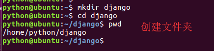
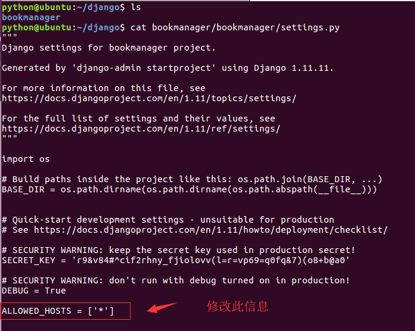
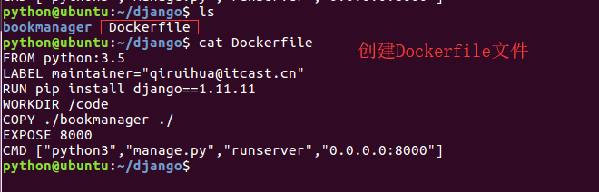
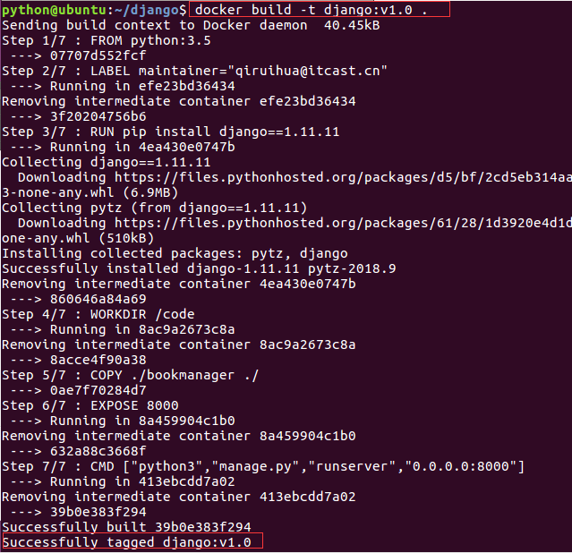
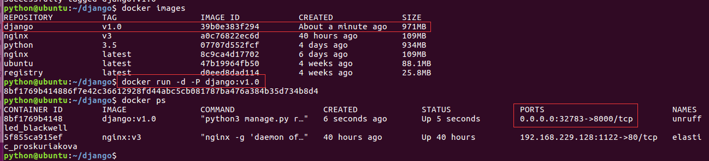
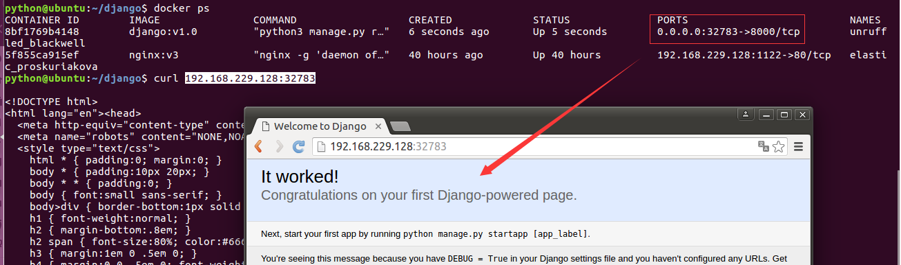

实战Django
第一步，创建一个空文件夹，我们命名为django,路径我们采用在home文件夹下
python@ubuntu:~$ mkdir django
python@ubuntu:~$ cd django
python@ubuntu:~/django$ pwd
/home/python/django
python@ubuntu:~/django$

第二步，在django目录下创建一个 简单的django工程，我们需要修改一下 setting.py中的 ALLOWED_HOST

第三步，创建Dockerfile文件
FROM python:3.5
LABEL maintainer="qiruihua@itcast.cn"
RUN pip install django==1.11.11
WORKDIR /code
COPY ./bookmanager ./
EXPOSE 8000
CMD ["python3","manage.py","runserver","0.0.0.0:8000"]

第四步，执行build操作
python@ubuntu:~/django$ docker build -t django:v1.0 .
Sending build context to Docker daemon 40.45kB
Step 1/7 : FROM python:3.5
---> 07707d552fcf
Step 2/7 : LABEL maintainer="qiruihua@itcast.cn"
---> Running in efe23bd36434
Removing intermediate container efe23bd36434
---> 3f20204756b6
Step 3/7 : RUN pip install django==1.11.11
---> Running in 4ea430e0747b
Collecting django==1.11.11
Downloading https://files.pythonhosted.org/packages/d5/bf/2cd5eb314aa2b89855c01259c94dc48dbd9be6c269370c1f7ae4979e6e2f/Django-1.11.11-py2.py3-none-any.whl (6.9MB)
Collecting pytz (from django==1.11.11)
Downloading https://files.pythonhosted.org/packages/61/28/1d3920e4d1d50b19bc5d24398a7cd85cc7b9a75a490570d5a30c57622d34/pytz-2018.9-py2.py3-none-any.whl (510kB)
Installing collected packages: pytz, django
Successfully installed django-1.11.11 pytz-2018.9
Removing intermediate container 4ea430e0747b
---> 860646a84a69
Step 4/7 : WORKDIR /code
---> Running in 8ac9a2673c8a
Removing intermediate container 8ac9a2673c8a
---> 8acce4f90a38
Step 5/7 : COPY ./bookmanager ./
---> 0ae7f70284d7
Step 6/7 : EXPOSE 8000
---> Running in 8a459904c1b0
Removing intermediate container 8a459904c1b0
---> 632a88c3668f
Step 7/7 : CMD ["python3","manage.py","runserver","0.0.0.0:8000"]
---> Running in 413ebcdd7a02
Removing intermediate container 413ebcdd7a02
---> 39b0e383f294
Successfully built 39b0e383f294
Successfully tagged django:v1.0

第五步，运行镜像
docker run -d -P django:v1.0
第六步，验证
